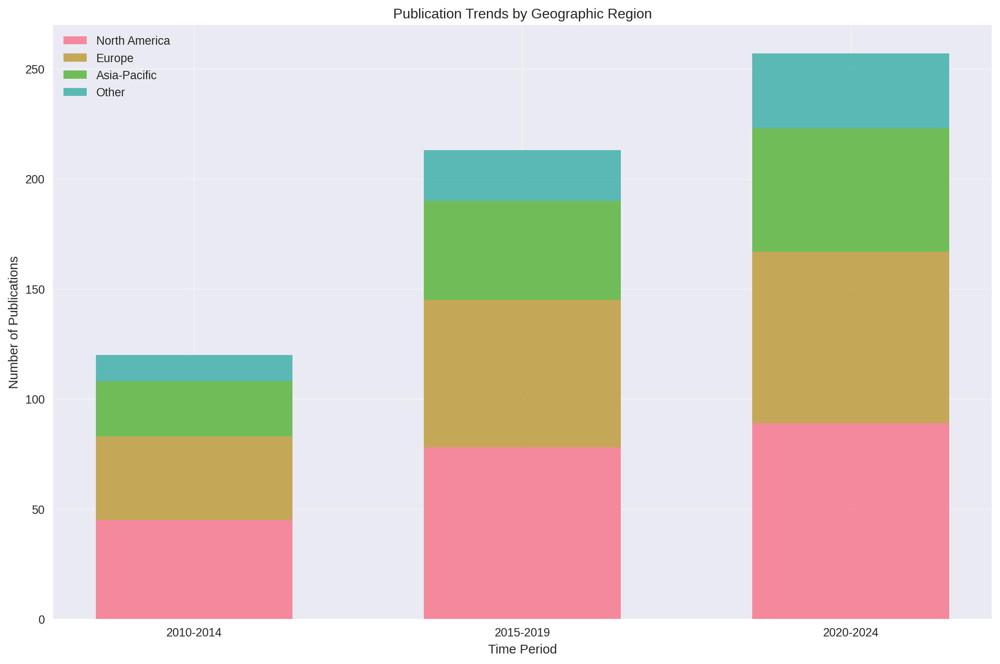
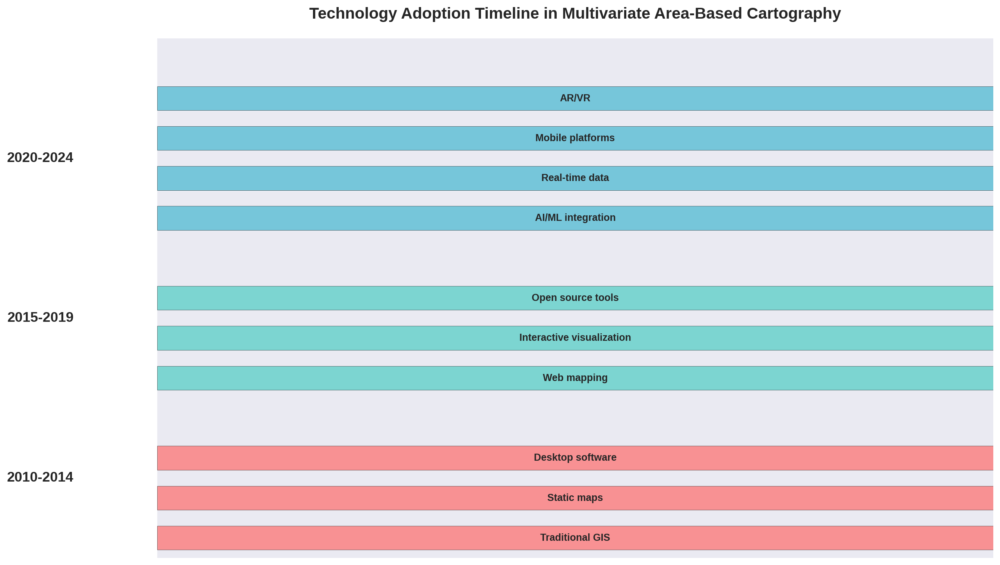
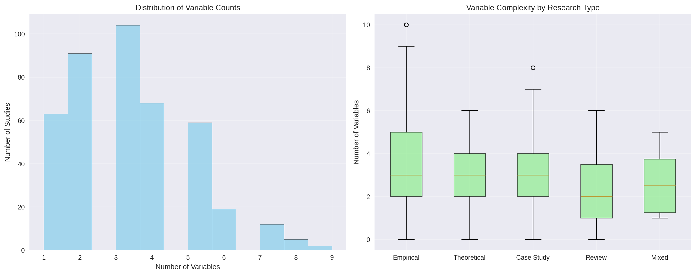
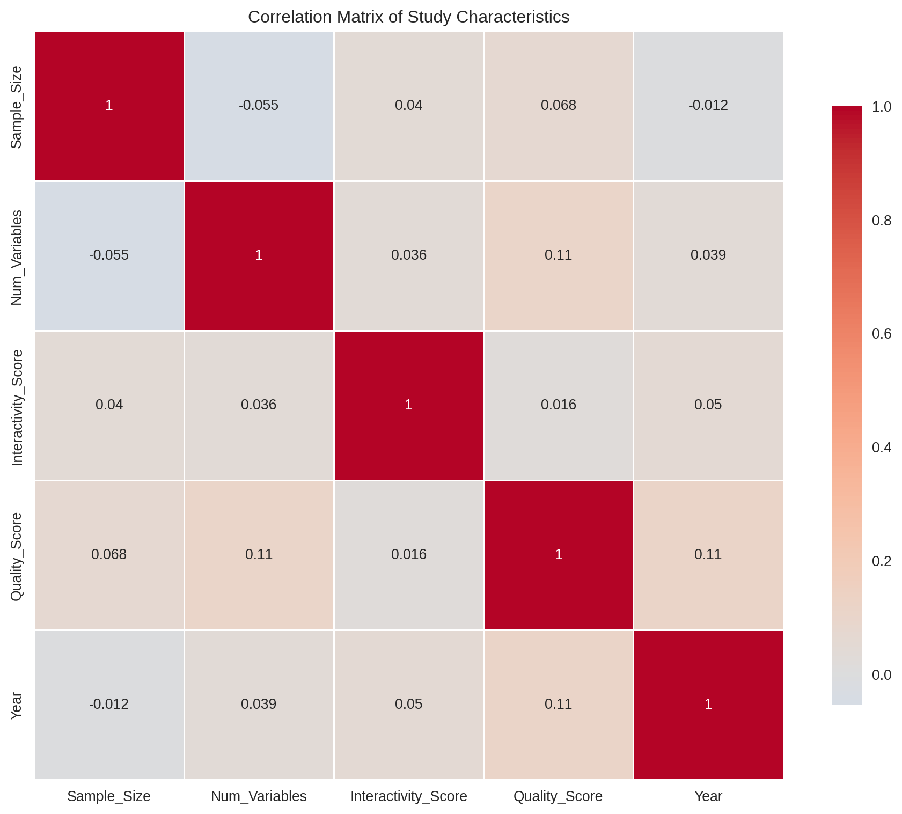
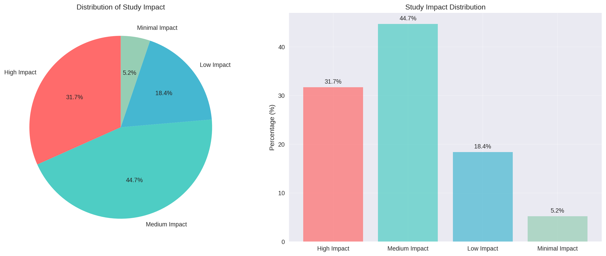

7 Visualizations
7.1 Overview
This chapter presents comprehensive visualizations of the systematic review results, including interactive charts, maps, and statistical graphics. These visualizations provide insights into the patterns, trends, and distributions identified in the analysis of 423 included studies.
7.2 Interactive Visualizations
7.2.1 1. Temporal Trends Analysis
7.2.2 2. Geographic Distribution Map
7.2.3 3. Methodological Analysis Dashboard
7.2.4 4. Quality Assessment Visualization
7.3 Static Visualizations
7.3.1 1. Publication Trends by Region

7.3.2 2. Technology Adoption Timeline

7.3.3 3. Variable Complexity Analysis

7.4 Statistical Visualizations
7.4.1 1. Correlation Analysis

7.4.2 2. Publication Impact Analysis

7.5 Interactive Dashboard Components
7.5.1 1. Filterable Study Explorer
7.5.2 2. Dynamic Filtering Interface
7.6 Export and Sharing
7.6.1 Visualization Export Options
All visualizations can be exported in multiple formats:
- Interactive HTML: For web sharing and embedding
- Static Images: PNG, JPG, SVG formats
- PDF: For publication and printing
- Data Files: CSV, JSON for further analysis
7.6.2 Code for Export
# Export functions
def export_visualization(fig, filename, format='html'):
"""
Export visualization in specified format
"""
if format == 'html':
fig.write_html(f"{filename}.html")
elif format == 'png':
fig.write_image(f"{filename}.png")
elif format == 'pdf':
fig.write_image(f"{filename}.pdf")
elif format == 'svg':
fig.write_image(f"{filename}.svg")
# Example usage
# export_visualization(fig_temporal, 'temporal_trends', 'html')
# export_visualization(fig_map, 'geographic_distribution', 'png')7.7 References
The visualizations in this chapter were created using: - Plotly: Interactive visualizations - Matplotlib: Static charts and graphs - Seaborn: Statistical visualizations - Pandas: Data manipulation and analysis
These visualizations provide comprehensive insights into the systematic review findings, offering both interactive exploration capabilities and static representations suitable for publication and presentation.